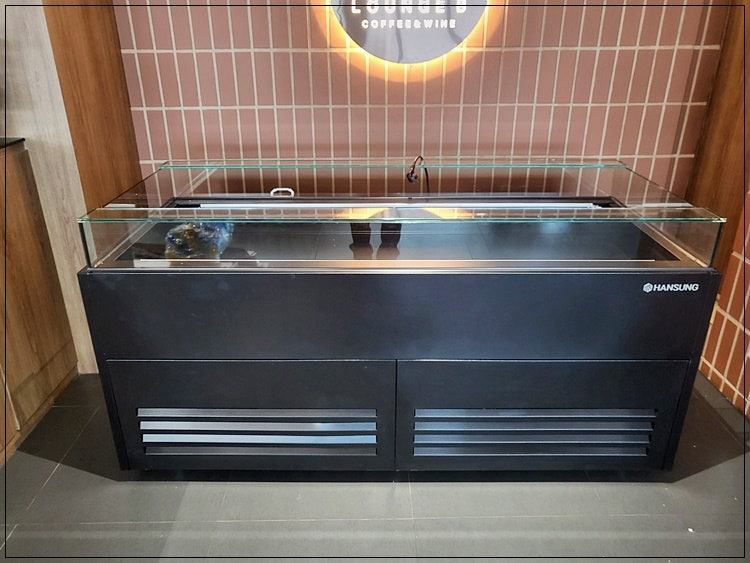
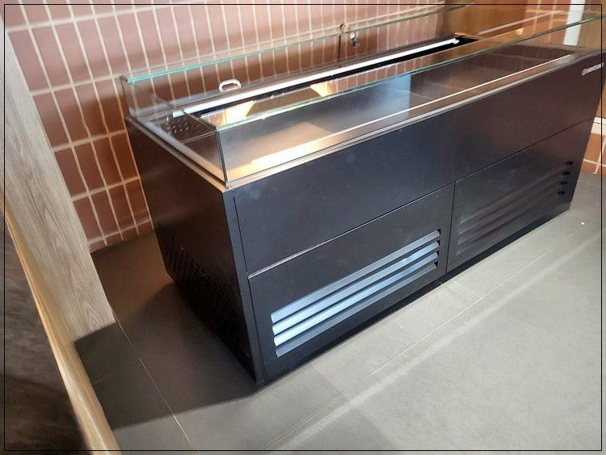
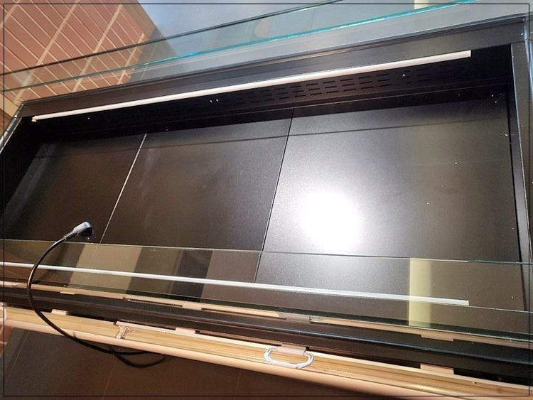
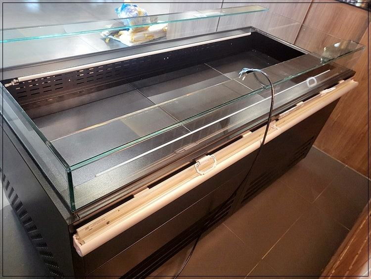
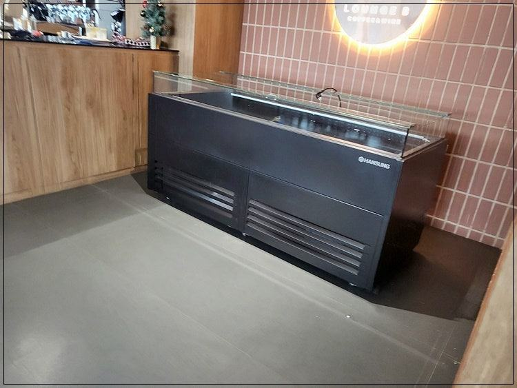
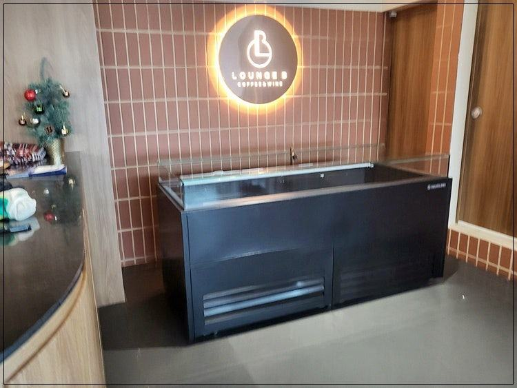

한성제품
냉장쇼케이스 고장, 증상별로 먼저 확인할 것과 수리 판단

냉장쇼케이스가 이상할 때는 전원과 설정 온도, 뒷면 열 배출, 토출구 막힘, 문 패킹처럼 사장님이 직접 볼 수 있는 곳부터 확인하시고, 그래도 증상이 이어지면 A/S를 부르시는 게 순서입니다. 수리와 교체는 사용 햇수보다 어느 부품에 문제가 생겼는지를 기준으로 판단하셔야 합니다.
안녕하세요. 냉장쇼케이스를 직접 설계하고 제작해 설치 후 관리까지 맡고 있는 한성쇼케이스입니다.
아침에 가게 문을 열었는데 쇼케이스 온도 표시가 평소보다 높게 떠 있으면 가슴이 철렁하시죠. 안에 든 케이크와 샌드위치, 음료를 어디로 옮겨야 하나 걱정부터 앞서실 겁니다.
그런데 막상 현장에 가 보면 부품이 망가진 경우만큼이나, 설치 환경이나 사용 습관 때문에 고장처럼 보이는 경우도 많습니다.
이런 경우는 사장님이 몇 가지만 확인해도 바로 해결되기도 합니다.
오늘은 냉장쇼케이스에서 자주 나타나는 고장 증상을 나눠 보고, A/S를 부르기 전에 확인할 것과 수리할지 교체할지 판단하는 기준을 정리해 드리겠습니다.
1. 온도가 내려가지 않을 때
가장 먼저 콘센트와 차단기, 설정 온도를 확인해 보세요. 청소하다 설정 버튼이 눌리거나 직원이 온도를 바꿔 둔 경우가 의외로 많습니다.
멀티탭 하나에 여러 장비를 물려 쓰다 전원이 불안정해진 경우도 있습니다.
다음은 뒷면입니다. 벽에 바짝 붙어 있거나 뒤에 박스가 쌓여 열이 빠지지 못하면 냉각이 제대로 되지 않습니다.
응축기에 먼지가 두껍게 앉아 있어도 같은 증상이 나타납니다. 상품을 너무 빽빽하게 채워 냉기 토출구와 흡입구를 막은 경우도 온도가 잘 내려가지 않습니다.
- 전원, 차단기, 설정 온도를 먼저 확인하세요.
- 뒷면 통풍과 응축기 먼지를 보세요.
- 토출구와 흡입구 앞의 상품을 치워 보세요.
2. 성에·결로·물 고임이 생길 때
유리에 김이 서리거나 내부에 성에가 두껍게 끼는 건 문이 제대로 닫히지 않을 때 자주 생깁니다. 문 패킹이 찢어지거나 이물질이 끼어 있으면 그 틈으로 습한 공기가 계속 들어옵니다.
바닥에 물이 고인다면 배수구가 막혔을 가능성이 큽니다. 직냉식 제품이라면 성에가 쌓이는 게 구조상 어느 정도 자연스러운 일이니 주기적으로 제상해 주시고, 간냉식인데 성에가 계속 쌓인다면 제상 쪽 점검이 필요할 수 있습니다.


3. 소음이 커지거나 조명이 꺼질 때
평소와 다른 덜컹거리는 소리나 쇳소리가 난다면 팬모터나 콤프레셔 쪽을 의심해 볼 수 있습니다. 바닥이 평평하지 않아 진동이 커지는 경우도 있으니 수평을 먼저 확인해 보세요.
소리가 끊겼다 이어지기를 반복하면서 온도까지 흔들린다면 바로 점검을 받으시는 게 좋습니다.
조명만 꺼졌다면 냉각과는 별개인 경우가 많아 상대적으로 급하지 않습니다. 다만 진열 상품이 어둡게 보이면 판매에 바로 영향을 주니 미루지 마세요.
- 소리가 나는 위치와 시간대를 메모해 두세요.
- 증상을 휴대폰 영상으로 찍어 두면 접수가 빨라집니다.
4. 수리할까, 교체할까
오래 썼다고 해서 바로 교체가 답은 아닙니다. 패킹, 팬모터, 온도 제어 부품, 조명처럼 교체가 쉬운 부품이라면 수리해서 충분히 더 쓸 수 있습니다.
반대로 콤프레셔나 냉매 계통처럼 핵심 부품에 문제가 생겼고 매장 구조도 바뀌었다면 새로 맞추는 쪽을 함께 따져 볼 만합니다.
판단이 어려울 때는 A/S 기사에게 어느 부품이 문제인지, 앞으로 같은 증상이 반복될 가능성이 있는지를 물어보세요.
그 답을 기준으로 정하시면 됩니다.
체크리스트
- 전원·차단기·설정 온도
- 뒷면 통풍과 응축기 먼지
- 토출구·흡입구 막힘
- 문 패킹과 배수구 상태
- 소음 위치와 증상 영상
- 문제 부품 확인 후 수리·교체 판단
사용법 안내까지 마치고 설치한 냉장쇼케이스 사례
카페에서 디저트와 샌드위치를 함께 판매하실 사장님의 의뢰로 직접 현장에 방문해 사이즈를 재고, 원하시는 기능과 외부 조건을 파악한 뒤 제작한 냉장쇼케이스입니다.
반듯하고 정갈한 분위기를 원하셔서 블랙 프레임으로 차분하게 마감했고, 컬러와 프레임 소재, 유리 같은 옵션은 직접 고르실 수 있도록 했습니다.
배송과 설치는 전문 직원이 함께했고, 설치 당일 사용 방법을 꼼꼼히 안내해 드렸습니다. 처음에 설정과 청소 방법, 열 배출 공간을 정확히 알고 쓰시면 고장처럼 보이는 문제의 상당수를 미리 막을 수 있습니다.









자주 묻는 질문
온도가 안 내려가면 바로 전원을 껐다 켜도 되나요?
전원을 껐다 바로 켜면 콤프레셔에 부담이 갈 수 있습니다. 끄셨다면 잠시 기다렸다 켜시고, 그 사이 상품은 다른 냉장고로 옮겨 두세요.
몇 년 쓴 제품도 A/S를 받을 수 있나요?
사용 기간과 관계없이 접수하실 수 있습니다. 한성쇼케이스는 전국 240여 개 A/S 센터를 운영하고 있어 지방 매장도 가까운 곳에서 점검받으실 수 있습니다.
고장을 줄이려면 평소에 무엇을 관리해야 하나요?
응축기 먼지 청소, 문 패킹 확인, 배수구 청소, 뒷면 통풍 공간 확보 네 가지만 꾸준히 하셔도 큰 고장을 상당히 줄일 수 있습니다.
성수기 전에는 한 번씩 점검을 받아 두시길 권합니다.
매장 조건에 맞춰 만드는 한성쇼케이스
원하시는 제품 사진과 설치할 공간 사진만 보내 주셔도 매장에 맞는 구성을 추천해 드립니다.
- 전국 240여 개 A/S 전담 센터 운영
- 본사 대량 자재 매입으로 품질 대비 합리적인 가격
- 유럽제·삼성 냉각 콤프레셔 적용
- 국내 최초 쇼케이스 전문 디자이너 상주
매장 폭과 원하는 진열 구성을 알려 주세요. 실측과 견적을 안내해 드립니다.
031-986-2458